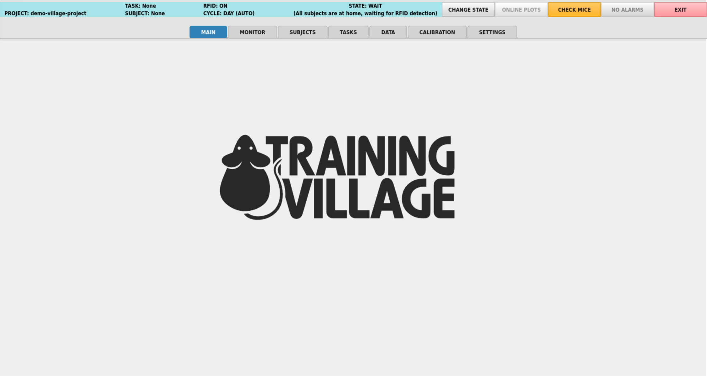
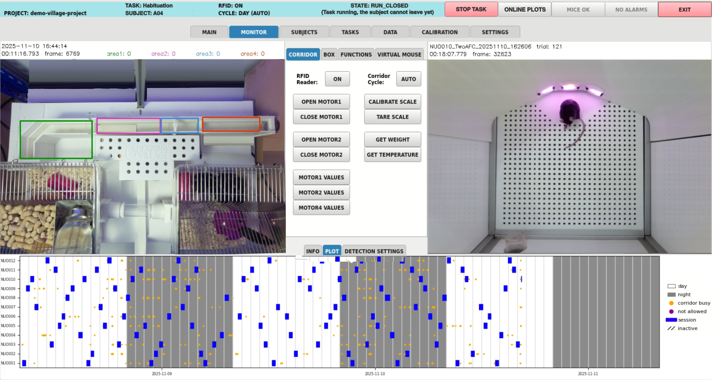
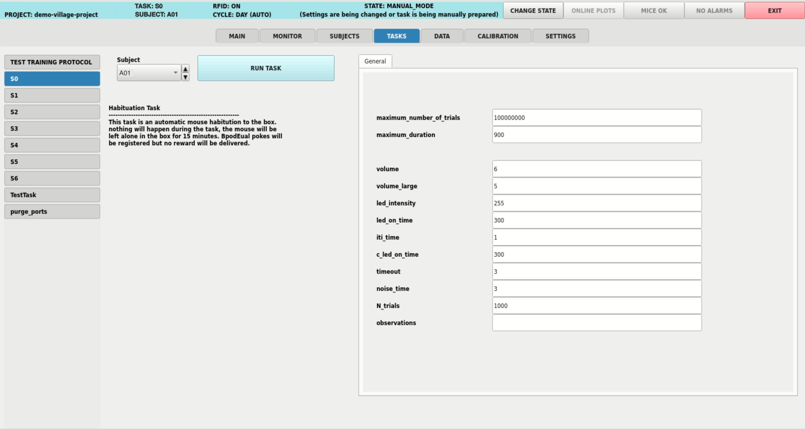
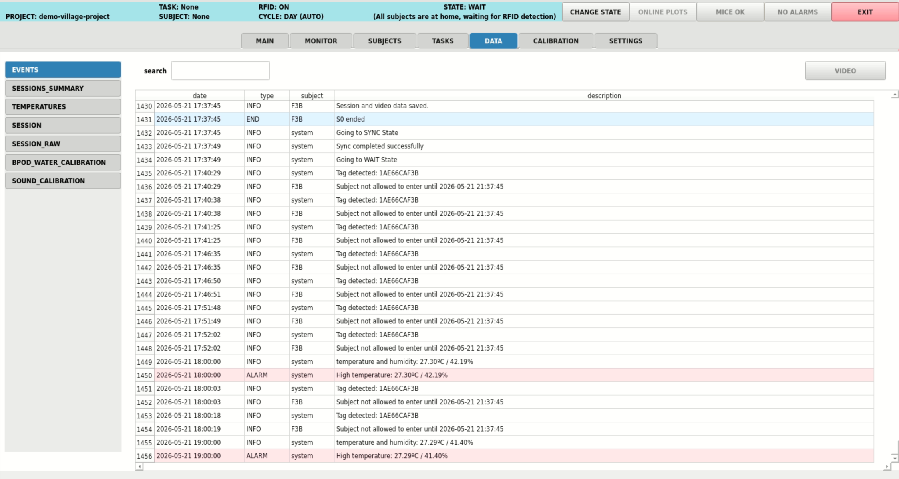
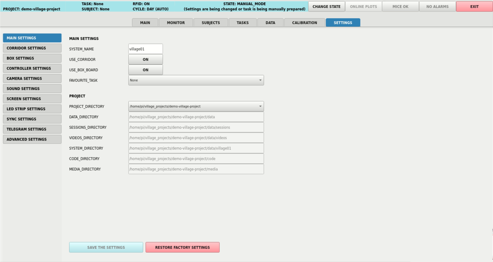

GUI Overview
Launch the GUI by entering the following command in a terminal:
run_village
When the GUI launches, the system automatically checks connections with essential components (such as cameras, temperature sensors, weight sensors, etc.). If any connection cannot be established, a warning message will display, and the Training Village will enter debug mode. For help resolving connection issues, refer to the troubleshooting section.
Once the GUI is active, a menu will appear at the top with the following options: MAIN, MONITOR, TASKS, DATA, and SETTINGS.
MAIN

The default screen where the Raspberry Pi does not perform any rendering to display videos, although videos continue to be recorded and saved in the background. If there is no user activity for 5 minutes, the system automatically returns to this screen.
MONITOR

The MONITOR screen is used to track the system’s status, displaying real-time video feeds from both the corridor and the behavioral box. Here, you can view images captured by the two cameras: one positioned above the corridor and another focused on the behavioral box. Several buttons are available at the center of the screen:
RFID Reader (ON/OFF): Enables or disables the RFID reader. Disabling the RFID reader prevents animals from entering the behavioral box.Cycle (AUTO/DAY/NIGHT): This button allows you to manually set the cameras to day or night mode, or leave them in AUTO mode. In AUTO mode, the cameras automatically switch between day and night at specified times, which can be configured in [settings][SETTINGS]. For animal welfare, the room lights should follow a day/night cycle, and the cameras must be calibrated accordingly to ensure accurate detection under both lighting conditions. Detailed instructions for this configuration can be found in the Animal Detection section.CORRIDOR/PORTS/FUNCTIONS: This button toggles between different groups of real-time actions.CORRIDOR: Provides controls for the doors, scale, and temperature sensor.PORTS: Allows you to turn on the LEDs or deliver water for one second in the behavior ports.FUNCTIONS: Allows you to execute user-defined Python functions, such as displaying visual stimuli, playing sounds, etc. Instructions for creating these functions can be found in the [Create a New Training Protocol][NEW] section.
DETECTION SETTINGS/SYSTEM INFO: This button switches the information displayed at the bottom of the screen.SYSTEM INFO: Shows recent system events and logs.DETECTION SETTINGS: Enables control over the animal detection parameters for both the corridor and the behavioral box. A detailed explanation of these settings is available in the detection section.
TASKS

On this screen, the active training protocol is displayed on the left side, along with a list of all available tasks.
Clicking on the training protocol allows you to test its functionality (check the Test a Training Protocol section to know how). When you click on a task, task information is displayed, along with an options menu that includes the following settings:
Subject: Clicking here opens a list of all available subjects, as well as the option “None.” Selecting “None” runs the task without saving any data.maximum_number_of_trials: The task will automatically end once this number of trials is completed.maximum_duration: The task will automatically end when this timer is reached.
In addition to these settings, a list of all variables defined for this specific training protocol will appear. In the Create a New Training Protocol section, we explain how to create a protocol and define its variables.
The RUN TASK button starts the task.
DATA

On this screen, saved data is displayed. The following tables are accessible:
EVENTS: A system log that records entries and exits of animals as well as unsuccessful entry attempts. Selecting an event and clicking onVIDEOprovides access to the corresponding video.SESSIONS SUMMARY: A list of all training sessions. Clicking on an item in the list allows access to the corresponding CSV file in either standard or raw format, as well as the session video and a user-configurable plot.SUBJECTS: A list of all subjects in the experiment, where the following details can be edited:name: Name of the subject.tag: RFID tag of the subject.basal_weight: Baseline weight of the subject.active: Status of the subject, which can be always active (ON), inactive (OFF), or active on specific days (Monday through Sunday). When inactive, the subject is not detected by the RFID reader (and therefore cannot enter the behavioral box) and does not trigger Telegram alarms.next_session_time: Based on the refractory period, this is the time when the animal is allowed to re-enter the behavioral box.next_settings: Settings for the next time the animal enters the behavioral box, including the name of the next assigned task and the corresponding variable values within the training protocol.
WATER_CALIBRATION: Calibration values for water valves or pumps.SOUND_CALIBRATION: Volume calibration values for the left and right speakers.TEMPERATURES: List of recorded temperature and humidity values.SESSION: The latest session, either currently in progress or the most recently completed. Clicking on PLOT opens a user-configurable, real-time plot.
A more detailed description of these tables, including how and where they are saved, can be found in the Saved Data section.
SETTINGS

List of all modifiable settings. Hover over each item for more information.